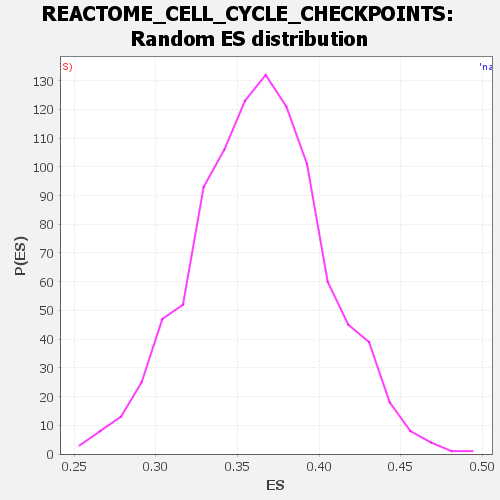

Profile of the Running ES Score & Positions of GeneSet Members on the Rank Ordered List
| Dataset | DGErankName |
| Phenotype | NoPhenotypeAvailable |
| Upregulated in class | na_neg |
| GeneSet | REACTOME_CELL_CYCLE_CHECKPOINTS |
| Enrichment Score (ES) | -0.19741365 |
| Normalized Enrichment Score (NES) | NaN |
| Nominal p-value | NaN |
| FDR q-value | 1.0 |
| FWER p-Value | 0.0 |
| SYMBOL | RANK IN GENE LIST | RANK METRIC SCORE | RUNNING ES | CORE ENRICHMENT | |
|---|---|---|---|---|---|
| 1 | SFN | 378 | 2.707 | -0.0050 | No |
| 2 | PSMB8 | 550 | 2.342 | 0.0010 | No |
| 3 | H2BC21 | 764 | 2.056 | 0.0021 | No |
| 4 | TP53 | 911 | 1.914 | 0.0066 | No |
| 5 | PSMC6 | 1099 | 1.767 | 0.0073 | No |
| 6 | CDKN1B | 1238 | 1.675 | 0.0105 | No |
| 7 | CLASP2 | 1314 | 1.631 | 0.0176 | No |
| 8 | ANAPC5 | 1372 | 1.599 | 0.0257 | No |
| 9 | MDM2 | 1449 | 1.561 | 0.0323 | No |
| 10 | PSMD5 | 1597 | 1.497 | 0.0336 | No |
| 11 | PPP2R5B | 1617 | 1.489 | 0.0434 | No |
| 12 | PSME1 | 1735 | 1.438 | 0.0463 | No |
| 13 | CDC26 | 2009 | 1.326 | 0.0380 | No |
| 14 | YWHAB | 2094 | 1.290 | 0.0420 | No |
| 15 | PSMA7 | 2127 | 1.277 | 0.0493 | No |
| 16 | SKA1 | 2176 | 1.262 | 0.0555 | No |
| 17 | BRCC3 | 2187 | 1.258 | 0.0642 | No |
| 18 | RPS27 | 2532 | 1.153 | 0.0499 | No |
| 19 | YWHAH | 2621 | 1.124 | 0.0524 | No |
| 20 | MIS12 | 2676 | 1.108 | 0.0570 | No |
| 21 | PSMD10 | 2766 | 1.082 | 0.0591 | No |
| 22 | PSMD12 | 2830 | 1.061 | 0.0628 | No |
| 23 | PPP2CA | 2980 | 1.019 | 0.0605 | No |
| 24 | PPP2R1A | 3047 | 0.998 | 0.0635 | No |
| 25 | NUP160 | 3056 | 0.995 | 0.0703 | No |
| 26 | PSMD9 | 3193 | 0.963 | 0.0684 | No |
| 27 | DYNC1I2 | 3195 | 0.963 | 0.0755 | No |
| 28 | UBE2E1 | 3226 | 0.955 | 0.0806 | No |
| 29 | RAD50 | 3275 | 0.940 | 0.0844 | No |
| 30 | DYNC1LI2 | 3384 | 0.916 | 0.0840 | No |
| 31 | NDE1 | 3415 | 0.908 | 0.0888 | No |
| 32 | WRN | 3842 | 0.811 | 0.0665 | No |
| 33 | RPS27A | 3871 | 0.805 | 0.0706 | No |
| 34 | RPA1 | 4058 | 0.760 | 0.0638 | No |
| 35 | PPP2CB | 4112 | 0.746 | 0.0659 | No |
| 36 | PSMA3 | 4198 | 0.728 | 0.0656 | No |
| 37 | PSMD3 | 4230 | 0.720 | 0.0689 | No |
| 38 | UBE2V2 | 4492 | 0.663 | 0.0565 | No |
| 39 | RANBP2 | 4495 | 0.663 | 0.0612 | No |
| 40 | H2BC4 | 4506 | 0.661 | 0.0655 | No |
| 41 | PSMA2 | 4706 | 0.612 | 0.0568 | No |
| 42 | TAOK1 | 4759 | 0.603 | 0.0578 | No |
| 43 | NUP43 | 4811 | 0.593 | 0.0588 | No |
| 44 | SKA2 | 4923 | 0.568 | 0.0557 | No |
| 45 | HERC2 | 4952 | 0.562 | 0.0580 | No |
| 46 | SEH1L | 5008 | 0.545 | 0.0584 | No |
| 47 | ATM | 5097 | 0.524 | 0.0564 | No |
| 48 | MRE11 | 5179 | 0.506 | 0.0548 | No |
| 49 | XPO1 | 5337 | 0.475 | 0.0478 | No |
| 50 | UBE2D1 | 5363 | 0.470 | 0.0497 | No |
| 51 | H2BC8 | 5446 | 0.453 | 0.0476 | No |
| 52 | YWHAG | 5537 | 0.433 | 0.0448 | No |
| 53 | PSMB7 | 5642 | 0.413 | 0.0410 | No |
| 54 | SEC13 | 5648 | 0.412 | 0.0437 | No |
| 55 | PSMB9 | 5729 | 0.398 | 0.0413 | No |
| 56 | ZW10 | 5739 | 0.396 | 0.0437 | No |
| 57 | MCM6 | 5754 | 0.392 | 0.0456 | No |
| 58 | ATR | 5833 | 0.376 | 0.0432 | No |
| 59 | MAPRE1 | 5852 | 0.372 | 0.0448 | No |
| 60 | DYNLL2 | 5895 | 0.362 | 0.0447 | No |
| 61 | CHEK2 | 5905 | 0.358 | 0.0468 | No |
| 62 | PSME2 | 5938 | 0.350 | 0.0472 | No |
| 63 | PSME3 | 5960 | 0.345 | 0.0484 | No |
| 64 | H2BC7 | 5984 | 0.341 | 0.0494 | No |
| 65 | ORC1 | 5993 | 0.339 | 0.0514 | No |
| 66 | PHF20 | 6070 | 0.322 | 0.0487 | No |
| 67 | MDM4 | 6099 | 0.317 | 0.0492 | No |
| 68 | PSMD11 | 6109 | 0.315 | 0.0510 | No |
| 69 | PSMB4 | 6175 | 0.300 | 0.0489 | No |
| 70 | DYNC1H1 | 6197 | 0.296 | 0.0497 | No |
| 71 | PSMB3 | 6211 | 0.293 | 0.0510 | No |
| 72 | MCM4 | 6282 | 0.279 | 0.0484 | No |
| 73 | H4C9 | 6324 | 0.271 | 0.0477 | No |
| 74 | MCM3 | 6363 | 0.264 | 0.0471 | No |
| 75 | PSMC4 | 6437 | 0.250 | 0.0441 | No |
| 76 | ANAPC1 | 6528 | 0.233 | 0.0398 | No |
| 77 | PPP2R5A | 6628 | 0.216 | 0.0349 | No |
| 78 | RBBP8 | 6675 | 0.208 | 0.0333 | No |
| 79 | CLASP1 | 6811 | 0.191 | 0.0258 | No |
| 80 | PSMB1 | 6829 | 0.187 | 0.0260 | No |
| 81 | TP53BP1 | 6896 | 0.175 | 0.0229 | No |
| 82 | H2BC12 | 6960 | 0.164 | 0.0200 | No |
| 83 | UBA52 | 6965 | 0.163 | 0.0209 | No |
| 84 | PSMB2 | 7058 | 0.145 | 0.0159 | No |
| 85 | H2BC17 | 7163 | 0.127 | 0.0099 | No |
| 86 | H2BC14 | 7253 | 0.115 | 0.0048 | No |
| 87 | H2BC13 | 7277 | 0.111 | 0.0041 | No |
| 88 | PSMC5 | 7280 | 0.111 | 0.0048 | No |
| 89 | YWHAQ | 7499 | 0.080 | -0.0091 | No |
| 90 | PSMD13 | 7514 | 0.078 | -0.0095 | No |
| 91 | PSMB5 | 7601 | 0.065 | -0.0147 | No |
| 92 | ANAPC7 | 7820 | 0.037 | -0.0289 | No |
| 93 | CDC7 | 7844 | 0.034 | -0.0302 | No |
| 94 | WEE1 | 7901 | 0.027 | -0.0337 | No |
| 95 | CHEK1 | 7909 | 0.027 | -0.0340 | No |
| 96 | H2BC9 | 7932 | 0.023 | -0.0353 | No |
| 97 | H2BC3 | 7938 | 0.022 | -0.0355 | No |
| 98 | YWHAZ | 8008 | 0.014 | -0.0400 | No |
| 99 | TOPBP1 | 8034 | 0.011 | -0.0415 | No |
| 100 | RAD9A | 8189 | -0.007 | -0.0517 | No |
| 101 | ITGB3BP | 8234 | -0.012 | -0.0546 | No |
| 102 | CDC23 | 8242 | -0.013 | -0.0549 | No |
| 103 | PSMD1 | 8253 | -0.014 | -0.0555 | No |
| 104 | RPA2 | 8314 | -0.019 | -0.0594 | No |
| 105 | DYNC1I1 | 8398 | -0.029 | -0.0647 | No |
| 106 | PSMB11 | 8450 | -0.036 | -0.0678 | No |
| 107 | MCM2 | 8596 | -0.051 | -0.0771 | No |
| 108 | NUP133 | 8754 | -0.068 | -0.0870 | No |
| 109 | CCNE1 | 8851 | -0.080 | -0.0928 | No |
| 110 | YWHAE | 8992 | -0.096 | -0.1014 | No |
| 111 | NUDC | 9064 | -0.105 | -0.1054 | No |
| 112 | H2BC1 | 9077 | -0.106 | -0.1054 | No |
| 113 | NDEL1 | 9141 | -0.111 | -0.1087 | No |
| 114 | RAD9B | 9219 | -0.119 | -0.1130 | No |
| 115 | PPP2R5E | 9231 | -0.120 | -0.1128 | No |
| 116 | CENPK | 9252 | -0.121 | -0.1132 | No |
| 117 | CLIP1 | 9263 | -0.122 | -0.1130 | No |
| 118 | ANAPC11 | 9353 | -0.131 | -0.1180 | No |
| 119 | H2BC15 | 9355 | -0.131 | -0.1170 | No |
| 120 | CCNE2 | 9381 | -0.134 | -0.1177 | No |
| 121 | PSMA5 | 9405 | -0.136 | -0.1182 | No |
| 122 | BRIP1 | 9438 | -0.139 | -0.1193 | No |
| 123 | BABAM1 | 9482 | -0.142 | -0.1211 | No |
| 124 | KNTC1 | 9571 | -0.151 | -0.1259 | No |
| 125 | MCM8 | 9661 | -0.159 | -0.1306 | No |
| 126 | SGO1 | 9663 | -0.159 | -0.1295 | No |
| 127 | BLM | 9670 | -0.160 | -0.1287 | No |
| 128 | PSMA4 | 9741 | -0.166 | -0.1321 | No |
| 129 | CDKN1A | 9789 | -0.169 | -0.1340 | No |
| 130 | ANAPC4 | 9872 | -0.175 | -0.1382 | No |
| 131 | CENPC | 9908 | -0.178 | -0.1392 | No |
| 132 | KIF2B | 9930 | -0.180 | -0.1392 | No |
| 133 | H2BC11 | 9935 | -0.180 | -0.1382 | No |
| 134 | SPDL1 | 9983 | -0.184 | -0.1399 | No |
| 135 | PSMA1 | 9998 | -0.185 | -0.1395 | No |
| 136 | DNA2 | 10005 | -0.185 | -0.1385 | No |
| 137 | AHCTF1 | 10050 | -0.189 | -0.1400 | No |
| 138 | CDC45 | 10167 | -0.198 | -0.1463 | No |
| 139 | NUP85 | 10178 | -0.198 | -0.1455 | No |
| 140 | SEM1 | 10441 | -0.218 | -0.1613 | No |
| 141 | BARD1 | 10621 | -0.230 | -0.1715 | No |
| 142 | RPA3 | 10691 | -0.235 | -0.1744 | No |
| 143 | PSMA8 | 10696 | -0.235 | -0.1729 | No |
| 144 | ANAPC15 | 10868 | -0.249 | -0.1824 | No |
| 145 | KIF18A | 10878 | -0.249 | -0.1812 | No |
| 146 | COP1 | 10927 | -0.252 | -0.1825 | No |
| 147 | RNF168 | 10959 | -0.255 | -0.1826 | No |
| 148 | ORC3 | 10960 | -0.255 | -0.1808 | No |
| 149 | RNF8 | 10976 | -0.256 | -0.1798 | No |
| 150 | NUP107 | 10978 | -0.257 | -0.1780 | No |
| 151 | H4C8 | 11029 | -0.260 | -0.1794 | No |
| 152 | KIF2C | 11039 | -0.260 | -0.1781 | No |
| 153 | RANGAP1 | 11057 | -0.261 | -0.1773 | No |
| 154 | BUB1B | 11074 | -0.263 | -0.1764 | No |
| 155 | UBE2N | 11195 | -0.273 | -0.1823 | No |
| 156 | RAD1 | 11404 | -0.289 | -0.1940 | No |
| 157 | MDC1 | 11419 | -0.291 | -0.1928 | No |
| 158 | ORC4 | 11423 | -0.291 | -0.1908 | No |
| 159 | NUP98 | 11436 | -0.293 | -0.1894 | No |
| 160 | CENPE | 11467 | -0.295 | -0.1893 | No |
| 161 | ORC5 | 11468 | -0.295 | -0.1871 | No |
| 162 | PSMA6 | 11568 | -0.303 | -0.1914 | No |
| 163 | SPC25 | 11589 | -0.305 | -0.1905 | No |
| 164 | BRCA1 | 11623 | -0.308 | -0.1904 | No |
| 165 | SGO2 | 11662 | -0.311 | -0.1906 | No |
| 166 | CENPA | 11674 | -0.312 | -0.1890 | No |
| 167 | BUB1 | 11741 | -0.318 | -0.1910 | No |
| 168 | PSME4 | 11821 | -0.324 | -0.1939 | No |
| 169 | H4C2 | 11842 | -0.326 | -0.1928 | No |
| 170 | ZNF385A | 11871 | -0.329 | -0.1922 | No |
| 171 | CLSPN | 11950 | -0.335 | -0.1949 | Yes |
| 172 | PPP1CC | 11964 | -0.337 | -0.1933 | Yes |
| 173 | CDK1 | 11977 | -0.339 | -0.1916 | Yes |
| 174 | PSMD2 | 11997 | -0.341 | -0.1903 | Yes |
| 175 | ORC6 | 12006 | -0.341 | -0.1883 | Yes |
| 176 | NBN | 12009 | -0.342 | -0.1859 | Yes |
| 177 | RCC2 | 12080 | -0.349 | -0.1880 | Yes |
| 178 | PSMF1 | 12124 | -0.353 | -0.1882 | Yes |
| 179 | CDK2 | 12177 | -0.358 | -0.1890 | Yes |
| 180 | CCNA1 | 12186 | -0.359 | -0.1869 | Yes |
| 181 | KNL1 | 12191 | -0.359 | -0.1845 | Yes |
| 182 | BABAM2 | 12201 | -0.361 | -0.1824 | Yes |
| 183 | DYNC1LI1 | 12248 | -0.365 | -0.1827 | Yes |
| 184 | CENPH | 12303 | -0.369 | -0.1836 | Yes |
| 185 | CENPN | 12337 | -0.372 | -0.1830 | Yes |
| 186 | CCNB2 | 12403 | -0.379 | -0.1845 | Yes |
| 187 | PPP2R1B | 12413 | -0.380 | -0.1823 | Yes |
| 188 | ANAPC16 | 12446 | -0.384 | -0.1816 | Yes |
| 189 | CDC25A | 12447 | -0.384 | -0.1787 | Yes |
| 190 | HUS1 | 12468 | -0.386 | -0.1772 | Yes |
| 191 | CDC6 | 12499 | -0.389 | -0.1763 | Yes |
| 192 | PPP2R5C | 12527 | -0.391 | -0.1752 | Yes |
| 193 | B9D2 | 12534 | -0.392 | -0.1727 | Yes |
| 194 | CENPL | 12615 | -0.401 | -0.1750 | Yes |
| 195 | KIF2A | 12619 | -0.402 | -0.1722 | Yes |
| 196 | NUF2 | 12643 | -0.404 | -0.1708 | Yes |
| 197 | EXO1 | 12646 | -0.405 | -0.1679 | Yes |
| 198 | CDC27 | 12655 | -0.405 | -0.1654 | Yes |
| 199 | CENPQ | 12699 | -0.409 | -0.1652 | Yes |
| 200 | BIRC5 | 12719 | -0.411 | -0.1634 | Yes |
| 201 | CENPM | 12733 | -0.413 | -0.1612 | Yes |
| 202 | RMI2 | 12780 | -0.420 | -0.1612 | Yes |
| 203 | PSMB6 | 12794 | -0.422 | -0.1589 | Yes |
| 204 | ANAPC10 | 12911 | -0.437 | -0.1634 | Yes |
| 205 | NSD2 | 12917 | -0.437 | -0.1605 | Yes |
| 206 | CCNB1 | 12929 | -0.438 | -0.1580 | Yes |
| 207 | ABRAXAS1 | 12947 | -0.441 | -0.1558 | Yes |
| 208 | RFC3 | 12972 | -0.444 | -0.1541 | Yes |
| 209 | CENPF | 12995 | -0.446 | -0.1523 | Yes |
| 210 | RFC5 | 13006 | -0.447 | -0.1496 | Yes |
| 211 | RFC4 | 13033 | -0.451 | -0.1480 | Yes |
| 212 | CKAP5 | 13067 | -0.455 | -0.1468 | Yes |
| 213 | CENPT | 13072 | -0.455 | -0.1437 | Yes |
| 214 | NDC80 | 13091 | -0.457 | -0.1415 | Yes |
| 215 | DYNLL1 | 13112 | -0.459 | -0.1394 | Yes |
| 216 | PKMYT1 | 13116 | -0.459 | -0.1362 | Yes |
| 217 | RHNO1 | 13130 | -0.462 | -0.1336 | Yes |
| 218 | ORC2 | 13232 | -0.477 | -0.1368 | Yes |
| 219 | CENPP | 13247 | -0.478 | -0.1342 | Yes |
| 220 | PSMD14 | 13323 | -0.489 | -0.1356 | Yes |
| 221 | CDC20 | 13363 | -0.495 | -0.1345 | Yes |
| 222 | MCM10 | 13365 | -0.496 | -0.1309 | Yes |
| 223 | CENPO | 13416 | -0.502 | -0.1305 | Yes |
| 224 | PSMD6 | 13497 | -0.515 | -0.1319 | Yes |
| 225 | ZWINT | 13524 | -0.517 | -0.1298 | Yes |
| 226 | ZWILCH | 13572 | -0.527 | -0.1291 | Yes |
| 227 | UIMC1 | 13591 | -0.530 | -0.1263 | Yes |
| 228 | CCNA2 | 13658 | -0.540 | -0.1267 | Yes |
| 229 | BUB3 | 13664 | -0.540 | -0.1230 | Yes |
| 230 | NUP37 | 13706 | -0.547 | -0.1217 | Yes |
| 231 | PSMC1 | 13713 | -0.549 | -0.1180 | Yes |
| 232 | DSN1 | 13732 | -0.553 | -0.1151 | Yes |
| 233 | PSMD4 | 13742 | -0.555 | -0.1116 | Yes |
| 234 | ATRIP | 13746 | -0.556 | -0.1076 | Yes |
| 235 | DBF4 | 13794 | -0.563 | -0.1066 | Yes |
| 236 | CDC16 | 13810 | -0.565 | -0.1034 | Yes |
| 237 | PSMC3 | 13837 | -0.569 | -0.1009 | Yes |
| 238 | UBE2C | 13841 | -0.569 | -0.0968 | Yes |
| 239 | GTSE1 | 13861 | -0.575 | -0.0938 | Yes |
| 240 | CDC25C | 13881 | -0.577 | -0.0908 | Yes |
| 241 | UBC | 13883 | -0.578 | -0.0866 | Yes |
| 242 | PAFAH1B1 | 13927 | -0.584 | -0.0851 | Yes |
| 243 | AURKB | 13979 | -0.597 | -0.0841 | Yes |
| 244 | NSL1 | 13995 | -0.601 | -0.0806 | Yes |
| 245 | PLK1 | 13998 | -0.602 | -0.0763 | Yes |
| 246 | UBB | 14032 | -0.610 | -0.0739 | Yes |
| 247 | CENPS | 14042 | -0.612 | -0.0700 | Yes |
| 248 | TOP3A | 14088 | -0.621 | -0.0684 | Yes |
| 249 | SPC24 | 14188 | -0.643 | -0.0702 | Yes |
| 250 | H4C6 | 14229 | -0.655 | -0.0680 | Yes |
| 251 | PIAS4 | 14326 | -0.676 | -0.0693 | Yes |
| 252 | CDCA8 | 14427 | -0.704 | -0.0708 | Yes |
| 253 | H2BC10 | 14442 | -0.708 | -0.0664 | Yes |
| 254 | CENPU | 14485 | -0.724 | -0.0638 | Yes |
| 255 | UBE2S | 14492 | -0.726 | -0.0588 | Yes |
| 256 | RAD17 | 14500 | -0.731 | -0.0539 | Yes |
| 257 | ERCC6L | 14551 | -0.751 | -0.0516 | Yes |
| 258 | PSMD8 | 14618 | -0.778 | -0.0502 | Yes |
| 259 | ANAPC2 | 14669 | -0.798 | -0.0476 | Yes |
| 260 | PCBP4 | 14674 | -0.801 | -0.0420 | Yes |
| 261 | PSMD7 | 14705 | -0.815 | -0.0379 | Yes |
| 262 | H2AX | 14726 | -0.825 | -0.0331 | Yes |
| 263 | PSMC2 | 14775 | -0.848 | -0.0300 | Yes |
| 264 | MAD1L1 | 14854 | -0.887 | -0.0286 | Yes |
| 265 | PPP2R5D | 14942 | -0.953 | -0.0273 | Yes |
| 266 | INCENP | 15059 | -1.057 | -0.0272 | Yes |
| 267 | KAT5 | 15077 | -1.083 | -0.0203 | Yes |
| 268 | H3-4 | 15099 | -1.111 | -0.0134 | Yes |
| 269 | PSMB10 | 15103 | -1.120 | -0.0053 | Yes |
| 270 | MCM5 | 15107 | -1.125 | 0.0029 | Yes |
| 271 | RFC2 | 15175 | -1.297 | 0.0081 | Yes |
